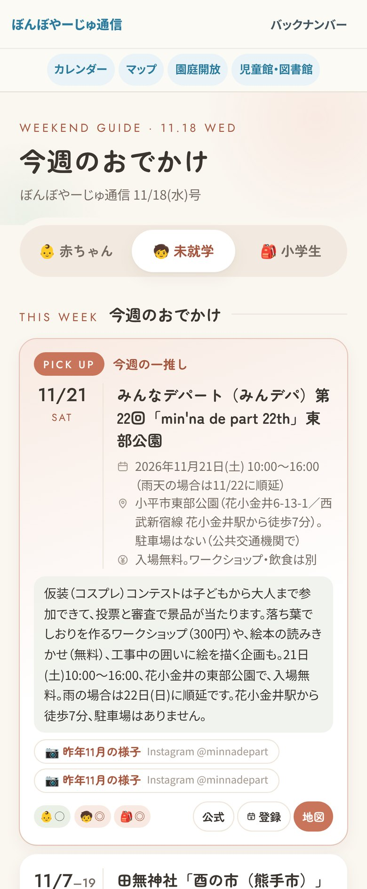

WEEKLY LETTER FOR FAMILIES
子育て中のご家庭へ
ぼんぼやーじゅ通信
Bon Voyage
週末のおでかけを、
水曜の朝に
赤ちゃん・未就学児・小学生のいるご家庭へ。
となりの市も含めた週末のおでかけ情報を、
毎週水曜の朝、LINEで無料でお届けしています。
年齢別に
赤ちゃん連れ・未就学の子・小学生のページに分けて
公式で確かめて
市や施設の公式ページで、一件ずつ確かめています
公園から講座まで
公園・児童館・図書館・科学館。季節のお祭りや講座も
NEW
11月25日の号から、
子連れで入りやすいカフェも キッズスペース・座敷・おむつ替えなど、
お店の案内に書いてあることを載せます
子連れで入りやすいカフェも キッズスペース・座敷・おむつ替えなど、
お店の案内に書いてあることを載せます
LINEの友だち登録で、
お子様分の風船をどうぞ 🎈
すでに登録している方も、どうぞお声がけください

LINE
カメラで読むと、
友だち追加の画面が
開きます 無料です。お名前やご住所の入力は
いりません。合わなければ、
いつでも解除できます。
カメラで読むと、
友だち追加の画面が
開きます 無料です。お名前やご住所の入力は
いりません。合わなければ、
いつでも解除できます。
LINEから開く、
年齢別のページ
11月18日号の
「未就学の子」のページ。
一推しは、
このみんデパでした
 ホームページ
今週号・カレンダー・
ホームページ
今週号・カレンダー・マップ・バックナンバー

登録している方へ
ご意見を
お聞かせください 匿名・3分ほど
11月30日まで
お聞かせください 匿名・3分ほど
11月30日まで
発行：ぼんぼやーじゅ通信の会（小平市・花小金井）
小平市民活動支援センター あすぴあ 登録団体（第254号）
書いているのは、
花小金井に住む子育て中の親です